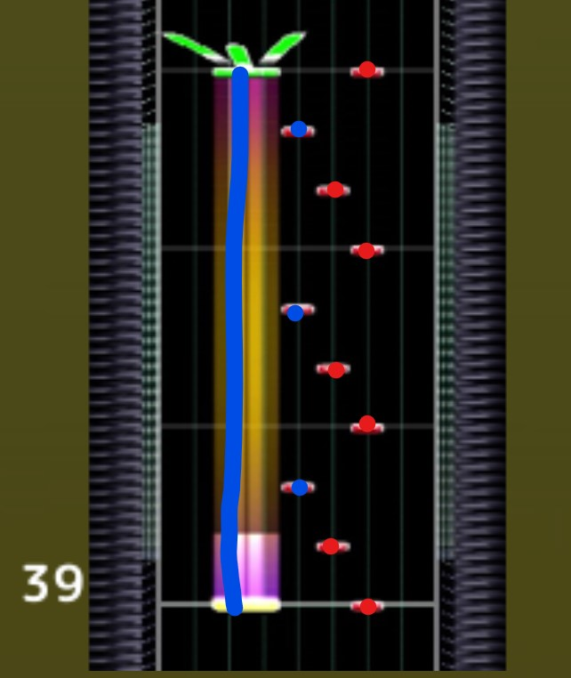
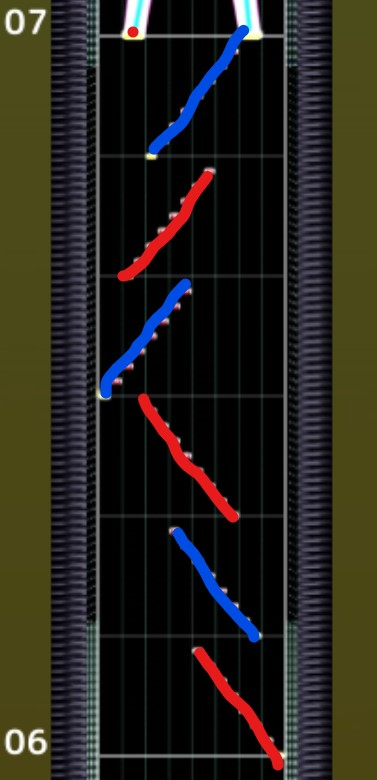

SSS達成したのでその時の運指メモです。自分の使った運指とか意識したこと書いておきます。 小節数は譜面保管所参照。
割愛
上げる手を間違えなければ全押しでいいと思います。 35小節目始めのエアーで左手に持ち替えて、右左左左右右右の順で上げる。
 普通に押すならこれ。始点ガン見して位置合わせる。ホールドは指１本で押すと抜けることがあるので親指以外の４本で抑えてタップを親指で拾うといいと思います。正直慣れみたいなところある。
ここすごい巻き込むので注意。できれば指押ししたい。
ノーツガン見しながら移動。擦る方が取りやすい人もいるらしい。
端で持ち替える。
なんか癖ついてなんか1回もAJ通過できなかった。始点の右手は中央より右から始まってほとんど動かないので左手だけ動かすの意識。
持ち替えた方が取りやすいと思うけど個人差。
休憩 ここ左手忙しいので注意。
重なってないノーツの直前は全押し非推奨（巻き込むので）。BPM130の16分音符が115ms間隔でattack判定が前後66~99ms（らしい）なので正しい判定より約16ms遅れると巻き込むらしい。
前述の理由で指押し推奨。全押し追いつかないなら早J出しながら早入り。
 両手トリルの後親指を添えるイメージ。
両手トリルの後親指を添えるイメージ。
重なってるので手を広げて押しても巻き込まない。
始点以外擦れます。
見たまま押す以外ないと思います。気合い。 指細くして擦る。
手でかい人用のワザップ。スライドを押さえながら指伸ばして取れるらしい。 漏れは手が小さいので普通にスライド抜けた。手が小さい人は素直に片手トリルしましょう。
 擦るより指押しのほうが安定した。手丸めるのを意識するといいと思います。直前のホールドは始点全押し。
擦るより指押しのほうが安定した。手丸めるのを意識するといいと思います。直前のホールドは始点全押し。
2個押して4個擦る。2個の方も擦っていいと思います。4個の方を両手で取ると次の始点届かないので片手で流す。
 持ち替えてもいいけど忙しいと思う。鳥許容残ってると焦って早くなりがちなので気持ち遅めでいいと思います。余裕ある人は判定ガン見。スライドの始点でattack出るとヤバいので気を付けて。
他の人も書いてるようなことしか書けてなくて役に立ってないかもしれません。ごめんなさい。 漏れはフィールドウォール使って視界狭くして手元ガン見すると伸びました。